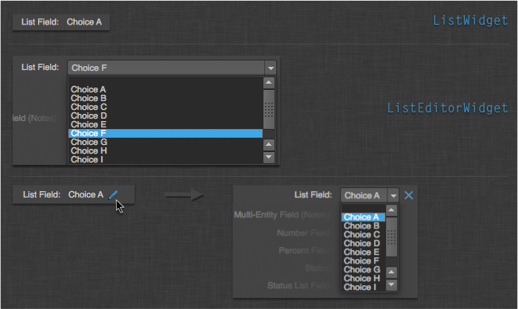
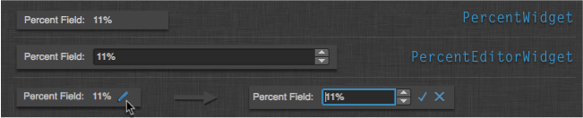
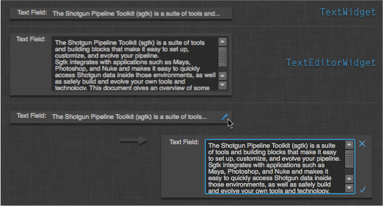

Shotgun Field Widgets¶
Introduction¶
The shotgun_fields module provides access to Qt widgets that correspond
to the field types available on Shotgun entities. The purpose of these widgets
is to make it easier to build apps that interact with Shotgun in a standardized
way.

Field Widget Manager¶
Access to individual field widgets is provided by the ShotgunFieldManager
factory class via the create_widget() method. Additional convenience methods
are avaialble on the class for creating delegates and labels corresponding to the
supplied Shotgun entity type and field.
-
class
shotgun_fields.ShotgunFieldManager(parent, bg_task_manager=None)[source]¶ Bases:
PySide.QtCore.QObjectInherited from a
QObject, this class acts as a factory for the set of widgets that can display values from Shotgun in a way appropriate to their field type.Signals: initialized()- Fires when the manager has finished running all the background tasks it needs for its functionalityEnum: DISPLAY, EDITOR, EDITABLE- Enumeration for widget types managed and provided by the classInitialize the field manager factory.
Parameters: - parent (
QWidget) – Parent object - bg_task_manager (
BackgroundTaskManager) – Optional Task manager. If this is not passed in one will be created when the object is initialized.
-
classmethod
get_class(sg_entity_type, field_name, widget_type='display')[source]¶ Returns the registered class associated with the field name for the supplied entity and widget type.
widget_typemust be one of the enum valuesDISPLAY,EDITOR, orEDITABLEdefined by the manager class. The default isDISPLAY.This method typically doens’t need to be called. Use the
create_widget()to get an instance of a registered class.Parameters: Returns: QWidgetclass orNoneif the field type has no display widgetRaises: ValueErrorif the suppliedwidget_typeis not known.
-
classmethod
register_class(field_type, widget_class, widget_type)[source]¶ Register a widget class for the given Shotgun field type.
widget_typemust be one of the enum valuesDISPLAY,EDITOR, orEDITABLEdefined by the manager class.This method usually does not need to be called. Widget classes are typically registered as they are imported (when using the
ShotgunFieldMetaclass).If you wish to override widgets at a global level (across all entity types), you can call this method manually. To override a widget for a specific entity and field type combination, call the
register_entity_field_class()method.Parameters: - field_type (str) – The data type of the field to associate with a type of widget
- widget_class (
PySide.QtGui.QWidget) – The display widget class to associate with the given field type - widget_type (str) – The type of widget class to register.
Raises: ValueErrorif the suppliedwidget_typeis not known.
-
classmethod
register_entity_field_class(entity_type, field_name, widget_class, widget_type)[source]¶ Similar to the
register_classmethod, but registers a widget to be used with a specific entity type and field. This is provided to allow very specific widget customizations for displaying and editing fields when the default widgets are insufficient.Example usage includes
checkboxfields (boolean values) where you may want to display an icon (or not) based on the field value rather than a standardQtGui.QCheckboxbased widget.Parameters:
-
create_delegate(sg_entity_type, field_name, view)[source]¶ Returns a delegate that can be used in the given view to show data from the given field from the given entity type. This delegate is designed to be used by items from a shotgun_model’s additional columns. It assumes that the value for the field will be stored in the
SG_ASSOCIATED_FIELD_ROLE(via theShotgunModel) role of its current index.Parameters: Returns: A
ShotgunFieldDelegateconfigured to represent the given field
-
create_label(sg_entity_type, field_name)[source]¶ Returns a widget that can be used as a label for the given field.
Parameters: Returns:
-
create_widget(sg_entity_type, field_name, widget_type='editable', entity=None, parent=None, **kwargs)[source]¶ Returns a widget associated with the entity and field type if a corresponding widget class been registered.
widget_typemust be one of the enum valuesDISPLAY,EDITOR, orEDITABLEdefined by the manager class.If the entity is passed in and has the value for the requested field then the initial contents of the widget will display that value.
Any keyword args other than those below will be passed to the constructor of whatever
QWidgetthe field widget wraps.Parameters: - sg_entity_type (str) – Shotgun entity type
- field_name (str) – Shotgun field name
- widget_type (str) – The type of widget to return.
- entity (dict) – The Shotgun entity dictionary to pull the field value from.
- parent (
PySide.QtGui.QWidget) – Parent widget
Returns: QWidgetorNoneif the field type has no display widget
-
initialize()[source]¶ Initialize the task manager.
When initialization is complete the initialized signal will be emitted.
-
supported_fields(sg_entity_type, field_names, widget_type=None)[source]¶ Returns the subset of fields from field_names that have an associated widget class. Field_names may be in “bubbled” notation, for example “sg_task.Task.assignee”.
widget_typemust be one of the enum valuesDISPLAY,EDITOR, orEDITABLEdefined by the manager class orNone.If
widget_typeisNone,DISPLAYwill be assumed.The default is to return a list of field names that have an associated display widget registered.
Parameters: Returns: The subset of
field_namesthat have associated widget classes.
- parent (
Field Widget Metaclass¶
All field widgets use the ShotgunFieldMeta class as their __metaclass__
in order to provide a consistent API across widgets of different types and to
register imported classes with the ShotgunFieldManager.
-
class
shotgun_fields.shotgun_field_meta.ShotgunFieldMeta[source]¶ Bases:
Shiboken.ObjectTypeThe primary purpose of this class is to register widget classes with the
shotgun_fields.ShotgunFieldManager. Classes that specify this class as their__metaclass__, and follow the protocols below, will be registered and available via theShotgunFieldManager.create_widget()factory method.This class also provides default logic common to all Shotgun field widgets without requiring them to use multiple inheritance which can be tricky.
The following protocols apply when using this class:
- Classes defined with this metaclass must have the following:
- A member named
_DISPLAY_TYPE,_EDITOR_TYPE, or both. The value of these members should be a string matching the Shotgun field data type that the class will be responsible for displaying or editing.
- A member named
Example:
class FloatDisplayWidget(QtGui.QLabel): __metaclass__ = ShotgunFieldMeta _DISPLAY_TYPE = "float" # ... class FloatEditorWidget(QtGui.QDoubleSpinBox): __metaclass__ = ShotgunFieldMeta _EDITOR_TYPE = "float" # ...
The widgets shown above will be used by any SG field for the specified type. It is also possible to register widgets that are used only for specific fields on specific entities. To achieve this, use the
_ENTITY_FIELDSclass memeber to define a list of tuples that explicitly defined the entity fields the widget should be used to display.Example:
class SpecialFloatDisplayWidget(QtGui.QLabel): __metaclass__ = ShotgunFieldMeta _DISPLAY_TYPE = "float" _ENTITY_FIELDS = [ ("CustomEntity07", "my_float_field"), ("CustomEntity11", "another_float_field"), ] # ...
The widget defined above will only be used to display the fields in the
_ENTITY_FIELDSlist.- No class defined with this metaclass can define its own
__init__method. - The metaclass defines an
__init__that takes the arguments below - The class will pass all other keyword args through to the PySide widget constructor for the class’ superclass.
- The metaclass defines an
- No class defined with this metaclass can define its own
Parameters: - parent (
PySide.QtGui.QWidget) – Parent widget - entity (Whatever is returned by the Shotgun API for this field) – The Shotgun entity dictionary to pull the field value from.
- field_name (str) – Shotgun field name
- bg_task_manager (
BackgroundTaskManager) – The task manager the widget will use if it needs to run a task
- All instances of the class will have the following member variables set:
_entity: The entity the widget is representing a field of (if passed in)_field_name: The name of the field the widget is representing_bg_task_manager: The task manager the widget should use (if passed in)_bundle: The current Toolkit bundle
- All instances of this class can emit the following signals:
value_changed(): Emitted when the value of the widget is changed either programmatically or via user interaction.
- The following optional method can be defined by classes using this metaclass
setup_widget(self): called during construction after the superclass has been initialized and after the above member variables have been set.set_value(self, value): called during construction aftersetup_widgetreturns. Responsible for setting the initial contents of the widget.get_value(): Returns the internal value stored for the widget. This value should match the format and type of data associated with the widget’s field in Shotgun, as returned by the python API.
- If
set_valueis not defined, then the class must implement the following methods: _display_default(self): Set the widget to display its “blank” state_display_value(self, value): Set the widget to display the value from Shotgun- These methods are called by the default implementation of
set_value.
- If
- Classes that handle display and editing of field values and must implement the following methods:
enable_editing(self, bool): Toggles the editability of the widget
- Editor classes can optionally implement the following methods:
_begin_edit(self): Used to provide additional behavior/polish when when the user has requested to edit the field. An example would be automatically showing a combobox popup menu or selecting the text in a line edit.
- Editor classes can optionally set the following members:
_IMMEDIATE_APPLY: If True, it implies that interaction with the editor will apply a value. If False (default), it implies that the user must apply the value as a separate action (like clicking an apply button). This mainly provides a display hint to theShotgunFieldEditablewrapper.
Field Widgets¶
The following is a list of all of the widgets available by default via the
ShotgunFieldManager. Instances of these classes are created by calling
the manager’s create_widget() method.
Checkbox¶
The CheckBoxWidget class serves as both editor and display for checkbox
field types in Shotgun. When requested as a DISPLAY type from a field manager
instance, the returned widget will simply be disabled.

-
class
shotgun_fields.checkbox_widget.CheckBoxWidget[source]¶ Bases:
PySide.QtGui.QCheckBoxDisplays a
checkboxfield value as returned by the Shotgun API.-
enable_editing(enable)[source]¶ Enable or disable editing of the widget.
This is provided as required for widgets that are used as both editor and display.
Parameters: enable (bool) – Trueto enable,Falseto disable
-
get_value()¶ Returns: The internal value being displayed by the widget.
-
set_value(value)¶ Set the value displayed by the widget.
Calling this method will result in
value_changedsignal being emitted.Parameters: value – The value displayed by the widget
-
Currency¶

-
class
shotgun_fields.currency_widget.CurrencyWidget[source]¶ Bases:
shotgun_fields.label_base_widget.LabelBaseWidgetDisplay a
currencyfield value as returned by the Shotgun API.-
get_value()¶ Returns: The internal value being displayed by the widget.
-
set_value(value)¶ Set the value displayed by the widget.
Calling this method will result in
value_changedsignal being emitted.Parameters: value – The value displayed by the widget
-
-
class
shotgun_fields.currency_widget.CurrencyEditorWidget[source]¶ Bases:
PySide.QtGui.QDoubleSpinBoxAllows editing of a
currencyfield value as returned by the Shotgun API.Pressing
EnterorReturnwhen the widget has focus will cause the value to be applied and thevalue_changedsignal to be emitted.-
set_value(value)¶ Set the value displayed by the widget.
Calling this method will result in
value_changedsignal being emitted.Parameters: value – The value displayed by the widget
-
Date And Time¶

-
class
shotgun_fields.date_and_time_widget.DateAndTimeWidget[source]¶ Bases:
shotgun_fields.label_base_widget.LabelBaseWidgetDisplay a
date_timefield value as returned by the Shotgun API.-
get_value()¶ Returns: The internal value being displayed by the widget.
-
set_value(value)¶ Set the value displayed by the widget.
Calling this method will result in
value_changedsignal being emitted.Parameters: value – The value displayed by the widget
-
-
class
shotgun_fields.date_and_time_widget.DateAndTimeEditorWidget[source]¶ Bases:
PySide.QtGui.QDateTimeEditAllows editing of a
date_timefield value as returned by the Shotgun API.Pressing
EnterorReturnwhen the widget has focus will cause the value to be applied and thevalue_changedsignal to be emitted.-
set_value(value)¶ Set the value displayed by the widget.
Calling this method will result in
value_changedsignal being emitted.Parameters: value – The value displayed by the widget
-
Date¶

-
class
shotgun_fields.date_widget.DateWidget[source]¶ Bases:
shotgun_fields.label_base_widget.LabelBaseWidgetDisplay a
datefield value as returned by the Shotgun API.-
get_value()¶ Returns: The internal value being displayed by the widget.
-
set_value(value)¶ Set the value displayed by the widget.
Calling this method will result in
value_changedsignal being emitted.Parameters: value – The value displayed by the widget
-
-
class
shotgun_fields.date_widget.DateEditorWidget[source]¶ Bases:
PySide.QtGui.QDateEditAllows editing of a
datefield value as returned by the Shotgun API.Pressing
EnterorReturnwhen the widget has focus will cause the value to be applied and thevalue_changedsignal to be emitted.-
set_value(value)¶ Set the value displayed by the widget.
Calling this method will result in
value_changedsignal being emitted.Parameters: value – The value displayed by the widget
-
Duration¶
Note
There are no widgets available for the duration field yet since there
is not yet API support for display options like hours vs. days, numbers of
hours in a workday, etc.
Entity¶

-
class
shotgun_fields.entity_widget.EntityWidget[source]¶ Bases:
shotgun_fields.label_base_widget.ElidedLabelBaseWidgetDisplay an
entityfield value as returned by the Shotgun API.-
get_value()¶ Returns: The internal value being displayed by the widget.
-
set_value(value)¶ Set the value displayed by the widget.
Calling this method will result in
value_changedsignal being emitted.Parameters: value – The value displayed by the widget
-
-
class
shotgun_fields.entity_widget.EntityEditorWidget[source]¶ Bases:
objectAllows editing of a
entityfield value as returned by the Shotgun API.-
get_value()¶ Returns: The internal value being displayed by the widget.
-
set_value(value)¶ Set the value displayed by the widget.
Calling this method will result in
value_changedsignal being emitted.Parameters: value – The value displayed by the widget
-
File Link¶

-
class
shotgun_fields.file_link_widget.FileLinkWidget[source]¶ Bases:
shotgun_fields.label_base_widget.ElidedLabelBaseWidgetDisplay a
urlfield value as returned by the Shotgun API.The
FileLinkWidgetrepresents both theDISPLAYandEDITORwidget type.-
enable_editing(enable)[source]¶ Enable or disable editing of the widget.
This is provided as required for widgets that are used as both editor and display.
Parameters: enable (bool) – Trueto enable,Falseto disable
-
setup_widget()[source]¶ Prepare the widget for display.
Called by the metaclass during initialization.
-
get_value()¶ Returns: The internal value being displayed by the widget.
-
set_value(value)¶ Set the value displayed by the widget.
Calling this method will result in
value_changedsignal being emitted.Parameters: value – The value displayed by the widget
-
Float¶

-
class
shotgun_fields.float_widget.FloatWidget[source]¶ Bases:
shotgun_fields.label_base_widget.LabelBaseWidgetDisplay a
floatfield value as returned by the Shotgun API.-
get_value()¶ Returns: The internal value being displayed by the widget.
-
set_value(value)¶ Set the value displayed by the widget.
Calling this method will result in
value_changedsignal being emitted.Parameters: value – The value displayed by the widget
-
-
class
shotgun_fields.float_widget.FloatEditorWidget[source]¶ Bases:
PySide.QtGui.QDoubleSpinBoxAllows editing of a
floatfield value as returned by the Shotgun API.Pressing
EnterorReturnwhen the widget has focus will cause the value to be applied and thevalue_changedsignal to be emitted.-
set_value(value)¶ Set the value displayed by the widget.
Calling this method will result in
value_changedsignal being emitted.Parameters: value – The value displayed by the widget
-
Footage¶

-
class
shotgun_fields.footage_widget.FootageWidget[source]¶ Bases:
shotgun_fields.label_base_widget.LabelBaseWidgetDisplay a
footagefield value as returned by the Shotgun API.-
get_value()¶ Returns: The internal value being displayed by the widget.
-
set_value(value)¶ Set the value displayed by the widget.
Calling this method will result in
value_changedsignal being emitted.Parameters: value – The value displayed by the widget
-
-
class
shotgun_fields.footage_widget.FootageEditorWidget[source]¶ Bases:
PySide.QtGui.QLineEditAllows editing of a
footagefield value as returned by the Shotgun API.Pressing
EnterorReturnwhen the widget has focus will cause the value to be applied and thevalue_changedsignal to be emitted.-
set_value(value)¶ Set the value displayed by the widget.
Calling this method will result in
value_changedsignal being emitted.Parameters: value – The value displayed by the widget
-
Image¶

-
class
shotgun_fields.image_widget.ImageWidget[source]¶ Bases:
PySide.QtGui.QLabelDisplay an
imagefield value as returned by the Shotgun API.The
ImageWidgetrepresents both theDISPLAYandEDITORwidget type.-
image_url¶ The string url to the currently loaded image file.
-
enable_editing(enable)[source]¶ Enable or disable editing of the widget.
This is provided as required for widgets that are used as both editor and display.
Parameters: enable (bool) – Trueto enable,Falseto disable
-
get_value()¶ Returns: The internal value being displayed by the widget.
-
set_value(value)¶ Set the value displayed by the widget.
Calling this method will result in
value_changedsignal being emitted.Parameters: value – The value displayed by the widget
-
List¶
-
class
shotgun_fields.list_widget.ListWidget[source]¶ Bases:
shotgun_fields.label_base_widget.LabelBaseWidgetDisplay a
listfield value as returned by the Shotgun API.-
get_value()¶ Returns: The internal value being displayed by the widget.
-
set_value(value)¶ Set the value displayed by the widget.
Calling this method will result in
value_changedsignal being emitted.Parameters: value – The value displayed by the widget
-
-
class
shotgun_fields.list_widget.ListEditorWidget[source]¶ Bases:
PySide.QtGui.QComboBoxAllows editing of a
listfield value as returned by the Shotgun API.-
set_value(value)¶ Set the value displayed by the widget.
Calling this method will result in
value_changedsignal being emitted.Parameters: value – The value displayed by the widget
-
Multi Entity¶

-
class
shotgun_fields.multi_entity_widget.MultiEntityWidget[source]¶ Bases:
shotgun_fields.entity_widget.EntityWidgetDisplay a
multi_entityfield value as returned by the Shotgun API.
-
class
shotgun_fields.multi_entity_widget.MultiEntityEditorWidget(parent=None)[source]¶ Bases:
shotgun_fields.bubble_widget.BubbleEditWidgetAllows editing of a
multi_entityfield value as returned by the Shotgun API.Initialize the widget.
Parameters: parent ( QWidget) – This widget’s parent widget-
add_entity(entity_dict)[source]¶ Add an entity bubble to the widget.
Parameters: entity_dict (dict) – A dictionary of information about the entity Returns: (int) unique id for the added entity The
entity_dictmust include the following fields:{ "type": "Asset", "id": 12345, "name": "Teapot", }
-
get_value()[source]¶ Return a list of entity dicitionaries for the entity bubbles in the widget.
Returns: A list of dictobjects.Return type: list
-
set_value(value)¶ Set the value displayed by the widget.
Calling this method will result in
value_changedsignal being emitted.Parameters: value – The value displayed by the widget
-
Number¶

-
class
shotgun_fields.number_widget.NumberWidget[source]¶ Bases:
shotgun_fields.label_base_widget.LabelBaseWidgetDisplay a
numberfield value as returned by the Shotgun API.-
get_value()¶ Returns: The internal value being displayed by the widget.
-
set_value(value)¶ Set the value displayed by the widget.
Calling this method will result in
value_changedsignal being emitted.Parameters: value – The value displayed by the widget
-
-
class
shotgun_fields.number_widget.NumberEditorWidget[source]¶ Bases:
PySide.QtGui.QSpinBoxAllows editing of a
numberfield value as returned by the Shotgun API.Pressing
EnterorReturnwhen the widget has focus will cause the value to be applied and thevalue_changedsignal to be emitted.-
set_value(value)¶ Set the value displayed by the widget.
Calling this method will result in
value_changedsignal being emitted.Parameters: value – The value displayed by the widget
-
Percent¶
-
class
shotgun_fields.percent_widget.PercentWidget[source]¶ Bases:
shotgun_fields.label_base_widget.LabelBaseWidgetDisplay a
percentfield value as returned by the Shotgun API.-
get_value()¶ Returns: The internal value being displayed by the widget.
-
set_value(value)¶ Set the value displayed by the widget.
Calling this method will result in
value_changedsignal being emitted.Parameters: value – The value displayed by the widget
-
-
class
shotgun_fields.percent_widget.PercentEditorWidget[source]¶ Bases:
PySide.QtGui.QSpinBoxAllows editing of a
percentfield value as returned by the Shotgun API.Pressing
EnterorReturnwhen the widget has focus will cause the value to be applied and thevalue_changedsignal to be emitted.-
set_value(value)¶ Set the value displayed by the widget.
Calling this method will result in
value_changedsignal being emitted.Parameters: value – The value displayed by the widget
-
Status List¶

-
class
shotgun_fields.status_list_widget.StatusListWidget[source]¶ Bases:
shotgun_fields.label_base_widget.LabelBaseWidgetDisplay a
status_listfield value as returned by the Shotgun API.-
get_value()¶ Returns: The internal value being displayed by the widget.
-
set_value(value)¶ Set the value displayed by the widget.
Calling this method will result in
value_changedsignal being emitted.Parameters: value – The value displayed by the widget
-
-
class
shotgun_fields.status_list_widget.StatusListEditorWidget[source]¶ Bases:
PySide.QtGui.QComboBoxAllows editing of a
status_listfield value as returned by the Shotgun API.-
set_value(value)¶ Set the value displayed by the widget.
Calling this method will result in
value_changedsignal being emitted.Parameters: value – The value displayed by the widget
-
Tags¶

Bases:
shotgun_fields.label_base_widget.ElidedLabelBaseWidgetDisplay a
tag_listfield value as returned by the Shotgun API.Returns: The internal value being displayed by the widget.
Set the value displayed by the widget.
Calling this method will result in
value_changedsignal being emitted.Parameters: value – The value displayed by the widget
Note
There is no editor widget for tags because the python API does
not currently support editing fields of this type.
Text¶
-
class
shotgun_fields.text_widget.TextWidget[source]¶ Bases:
shotgun_fields.label_base_widget.ElidedLabelBaseWidgetDisplay a
textfield value as returned by the Shotgun API.-
get_value()¶ Returns: The internal value being displayed by the widget.
-
set_value(value)¶ Set the value displayed by the widget.
Calling this method will result in
value_changedsignal being emitted.Parameters: value – The value displayed by the widget
-
-
class
shotgun_fields.text_widget.TextEditorWidget[source]¶ Bases:
PySide.QtGui.QTextEditAllows editing of a
textfield value as returned by the Shotgun API.-
set_value(value)¶ Set the value displayed by the widget.
Calling this method will result in
value_changedsignal being emitted.Parameters: value – The value displayed by the widget
-
Timecode¶
Note
There are no widgets available for the timecode field yet since there
is not yet API support for an associated fps field.
Url Template¶

-
class
shotgun_fields.url_template_widget.UrlTemplateWidget[source]¶ Bases:
shotgun_fields.label_base_widget.ElidedLabelBaseWidgetDisplay a
url_templatefield value as returned by the Shotgun API.-
get_value()¶ Returns: The internal value being displayed by the widget.
-
set_value(value)¶ Set the value displayed by the widget.
Calling this method will result in
value_changedsignal being emitted.Parameters: value – The value displayed by the widget
-
Note
There is no editor widget for url_templates because the python API does
not currently support editing fields of this type.
Editable Widgets¶
Requesting the EDITABLE type for a field via the manager will return a
ShotgunFieldEditable instance. This widget is a stacked widget that includes
both the display and editor currency widgets. You can see examples of the
editable widgets at the bottom of each screenshot above.
Clicking on the pencil icon while hovering over the display widget will swap
the display widget for the editor. When the editor is visible, clicking the
X icon will switch back to the display widget and revert any changes made
in the editor. If the check mark icon is clicked, the changes will be applied
and the the display widget will be shown with the new value.
-
class
shotgun_fields.shotgun_field_editable.ShotgunFieldEditable(display_widget, editor_widget, parent=None)[source]¶ Bases:
PySide.QtGui.QStackedWidgetWraps
DISPLAYandEDITORwidgets into aQStackedWidgetinstance to allow toggling between the two modes.Initialize the editable widget with the display and editor instances.
Parameters:
If an EDITABLE type is requested for a field that has no registered editor
widget, then an instance of ShotgunFieldNotEditable will be returned. This
class displays the editor with an additional icon when hovered that indicates
that the field is not editable.
-
class
shotgun_fields.shotgun_field_editable.ShotgunFieldNotEditable(display_widget, parent=None)[source]¶ Bases:
PySide.QtGui.QWidgetSimplified wrapper that indicates a field is not editable.
Adds a “no edit” icon when the supplied
DISPLAYwidget is hovered.Initialize the widget.
Parameters:
Base Classes¶
The following classes are used as base classes in one or more field widgets and may prove useful when diving into the details of a widget’s implementation.
Bubble Edit Widget¶
The BubbleEditWidget class is used as a base class for editing a list of
objects. The MultiEntityEditorWidget is a subclass of the
BubbleEditWidget.
-
class
shotgun_fields.bubble_widget.BubbleEditWidget(parent=None)[source]¶ Bases:
PySide.QtGui.QTextEditThis is a base class for “bubble” entry widgets.
Each object is represented by a “bubble” similar to email address entry widgets in modern email clients. Subclasses will typically handle the user interaction and decide when a new “bubble” should be added to the widget.
Initialize the widget.
Parameters: parent ( QWidget) – This widget’s parent widget-
add_bubble(bubble)[source]¶ Add the supplied
BubbleWidgetinstance to the editor.Parameters: bubble – The bubble widget instance. Returns: A unique id for the added bubble Return type: int
-
get_bubble(bubble_id)[source]¶ Returns a bubble widget based on the supplied id.
The
bubble_idshould correspond to the unique ID returned by theadd_bubble()method.Parameters: bubble_id – The id of the bubble to retrieve. Returns: A bubble widget or Noneif not match is foundReturn type: BubbleWidget
-
get_bubbles()[source]¶ Similar to
get_bubble, but returns all bubble widgets.Returns: List of BubbleWidgetclassesReturn type: list
-
remove_bubble(bubble_id)[source]¶ Remove a bubble matching the supplied id.
Parameters: bubble_id (int) – The unique id of the bubble to reomve. Returns: The removed qt widget The
bubble_idshould correspond to the unique ID returned by theadd_bubble()method.
-
Bubble Widget¶
This class represents individual “bubbles” managed within a BubbleEditWidget
subclasses.
-
class
shotgun_fields.bubble_widget.BubbleWidget(parent=None)[source]¶ Bases:
PySide.QtGui.QFrameThis class represents a drawable “bubble” to display in a
BubbleEditWidgetThis widget will stores data for the object it represents. The data can be set and accessed via the respective
get_data()andset_data()methods.The widget can display an optional image along with its text. See the display related methods
set_text()andset_image()below.Signal: remove_clicked()- emitted when the widget’sxbutton clicked.Initialize the widget.
Parameters: parent ( QWidget) – This widget’s parent widget-
set_text(label_text)[source]¶ Set the bubble’s display text.
Parameters: label_text (str) – The display text
-
set_image(url)[source]¶ Set the bubble’s display image.
Parameters: url (str) – The image url to display in the bubble.
-
set_removable(removable)[source]¶ Set whether or not the bubble is removable.
Shows or hides the
xbutton depending on the value of theremovableargument. :param bool removable:Trueif the bubble is removable,Falseotherwise.
-
Label Base Widget¶
The LabelBaseWidget provides a very simple base class for many of the display
widgets above. It provides the basic interface required by classes using the
ShotgunFieldMeta __metaclass__.
-
class
shotgun_fields.label_base_widget.LabelBaseWidget[source]¶ Bases:
PySide.QtGui.QLabelDisplay any Shotgun field value than can be directly rendered as a string.
Elided Label Base Widget¶
The ElidedLabelBaseWidget is nearly identical to the LabelBaseWidget
except that it will elide its display text when the text is too long to display
in the layout.
Field Widget Delegates¶
-
class
shotgun_fields.shotgun_field_delegate.ShotgunFieldDelegate(sg_entity_type, field_name, display_class, editor_class, view, bg_task_manager=None)[source]¶ Bases:
objectA delegate for a given type of Shotgun field. This delegate is designed to work with indexes from a ShotgunModel where the value of the field is stored in the SG_ASSOCIATED_FIELD_ROLE role.
Constructor
Parameters:
Example Code¶
1 2 3 4 5 6 7 8 9 10 11 12 13 14 15 16 17 18 19 20 21 22 23 24 25 26 27 28 29 30 31 32 33 34 35 36 37 38 39 40 41 42 43 44 45 46 47 48 49 50 51 52 | class ExampleTableWidget(QtGui.QWidget):
def __init__(self):
QtGui.QWidget.__init__(self)
# grab the current app bundle for use later
self._app = sgtk.platform.current_bundle()
# initialize the field manager
self._fields_manager = shotgun_fields.ShotgunFieldManager(self)
self._fields_manager.initialized.connect(self.populate_dialog)
self._fields_manager.initialize()
def populate_dialog(self):
entity_type = "Version"
entity_query = []
# grab all of the fields on the entity type
fields = sorted(self._app.shotgun.schema_field_read(entity_type).keys())
# query Shotgun for the entities to display
entities = self._app.shotgun.find(entity_type, entity_query, fields=fields)
# set the headers for each field
field_labels = []
for field in fields:
field_labels.append(shotgun_globals.get_field_display_name(entity_type, field))
# create the table that will display all the data
table = QtGui.QTableWidget(len(entities), len(fields), self)
table.setHorizontalHeaderLabels(field_labels)
# create display widgets only
widget_type = self._fields_manager.DISPLAY
# populate the table with the data in the entities returned by the query above
for (i, entity) in enumerate(entities):
for (j, field) in enumerate(fields):
# create the widget for each field
widget = self._fields_manager.create_widget(
entity_type, field, widget_type, entity)
if widget is None:
# backup in case the manager does not understand this field type
widget = QtGui.QLabel("No widget")
# put the widget into the table
table.setCellWidget(i, j, widget)
# update widths and setup the table to be displayed
table.resizeColumnsToContents()
layout = QtGui.QVBoxLayout(self)
layout.addWidget(table)
self.setLayout(layout)
|
1 2 3 4 5 6 7 8 9 10 11 12 13 14 15 16 17 18 19 20 21 22 23 24 25 26 27 | class ExampleTableView(QtGui.QWidget):
def __init__(self):
QtGui.QWidget.__init__(self)
# grab a field manager to get the delegate
self.fields_manager = shotgun_fields.ShotgunFieldManager(self)
self.fields_manager.initialized.connect(self.on_initialized)
self.fields_manager.initialize()
def on_initialized(self):
entity_type = "Version"
# grab all displayable fields on the entity type, with "code" first
fields = shotgun_globals.get_entity_fields(entity_type)
fields = self.fields_manager.supported_fields(entity_type, fields)
fields = ["code"] + [f for f in fields if f != "code"]
# setup the model and view
self.model = shotgun_model.SimpleShotgunModel(self)
self.model.load_data(entity_type, filters=[], fields=fields, columns=fields)
self.table = views.ShotgunTableView(self.fields_manager, parent=self)
self.table.setModel(self.model)
# and layout the dialog
layout = QtGui.QVBoxLayout(self)
layout.addWidget(self.table)
self.setLayout(layout)
|
TODOs & Known Issues¶
- Pressing
EnterorReturnin an entity editor does not always apply the completed value - Bubble widget does not display characters properly in some scenarios
- Timecode & Duration widgets are on hold until python API changes make them feasible
- Tag edit widget partially done but also awaiting python API edit ability
ElidedLabelcauses draw lagging when used in editable widget in Grid/Form layout- Global completer with QTextEdit, clicking on popup item does not emit activated (keyboard nav works fine)
- The note input widget should be updated to use the global completer
- The status list widget editor should also use colors for visual hint like display widget
- Retrieving reliable field delegates from the field manager is in progress
- Editor interaction with the shotgun model is still to come
- shotgun model to auto update SG on changes still to come
- shotgun tableview using fields widgets still in progress